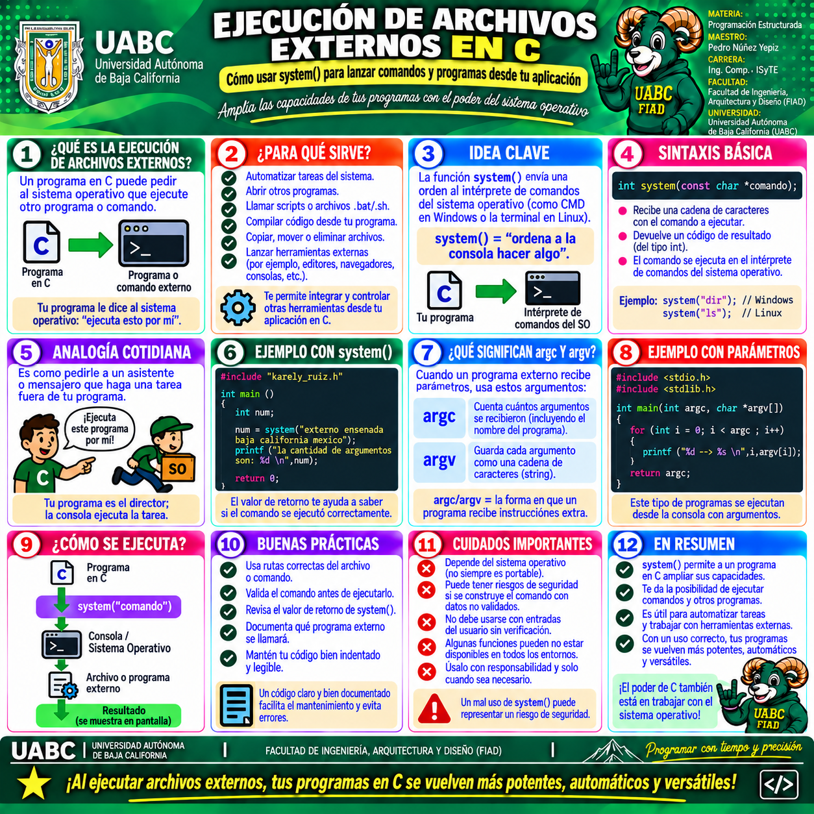

🖥️ Galería visual del tema
Esta infografía complementa el Tema 10 · Multiarchivo, especialmente
la sección dedicada a la ejecución de archivos externos en C.
Resume cómo un programa puede solicitar al sistema operativo que ejecute
comandos, programas o scripts utilizando system().
Selecciona la imagen para verla a mayor tamaño y utilizar las herramientas de navegación y zoom.

1 · Ejecución de archivos externos en C
Explica qué es system(), para qué sirve, cómo se ejecuta
un comando externo, el significado de argc y
argv, el envío de parámetros y los principales cuidados
de seguridad y compatibilidad.
🧠 Puntos clave que debes identificar
1️⃣
SYSTEM()
Envía un comando al intérprete del sistema operativo.
Envía un comando al intérprete del sistema operativo.
2️⃣
PARÁMETROS
Los programas externos pueden recibir argumentos mediante
Los programas externos pueden recibir argumentos mediante
argc y argv.
3️⃣
RETORNO
El valor de retorno permite conocer el resultado de la ejecución.
El valor de retorno permite conocer el resultado de la ejecución.
4️⃣
SEGURIDAD
No se deben ejecutar comandos construidos con entradas no validadas.
No se deben ejecutar comandos construidos con entradas no validadas.
🎯
EN RESUMEN
La ejecución de archivos externos permite que un programa en C se comunique con comandos, scripts u otros programas. Esta técnica amplía sus capacidades, pero debe utilizarse con cuidado, validando parámetros y considerando las diferencias entre sistemas operativos.
La ejecución de archivos externos permite que un programa en C se comunique con comandos, scripts u otros programas. Esta técnica amplía sus capacidades, pero debe utilizarse con cuidado, validando parámetros y considerando las diferencias entre sistemas operativos.